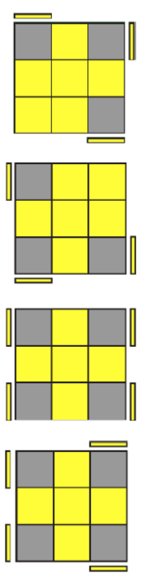

How to Solve the Rubik's Cube Using the CFOP Method
Step 1: Solving the Cross
The first step in solving a Rubik's cube is to solve the "White Cross." This can be done by arranging the white edge peices to line up with their respective sides corresponding to the peice at the center of each side
Step 2: The First Two Layers(F2L)
Next is to solve the corners of the white side and all of the peices connected. This can be done by first putting the corners in their spot and inserting the edges next to them; as you get faster you can insert the corners with the edges
Step 3: Orientation of the Last Layer(OLL)
Now comes the algorithms, if you do not know the notation, see chart below. Remember for all of these the yellow side will start on the top for reference.
There is two steps to OLL first being to solve the edgeds, then the corners. For the first OLL step there are three cases.
The "Line"
The "Dot"
The "L"
These are each solved differently.
The "Line" is solved by first rotating the cube to where the line appears as horizantal. and performing the algorithm "F R U R' U' F'"
The "Dot" is solved by simply doing this algorithm" "F R U R' U' S R U R' U'"
The "L" is solved by having the L in the upper right corner and performing "F U R U' R'"
The second part of OLL is more complex as seen below.

The first case is solved by doing something called a "soon" where you move the solved yellow corner to the bottom left corner of the yellow side and perform "R U R' U R U2 R'"
The next case is solved by doing an "anti-soon" where the solved corner is moved to the bottom right of the yellow side and the opposite is performed as "L' U' L U' L' U2 L"
The Third case is called double headlights and is solved by facing one of the pairs of headlights toward you and performing the simple " F (R U R' U')x3
For the fourth case face the headligths to the left and do " f R U R' U' f' F R U R' U' F'"
There is still three more cases that each have two unsolved corners
If there is two unsolved adjacent coreners with no headlights, put them both to the left and do " r U R' U' r' F R F'"
If there is headlights face them in the back and do the same algorithm as before, thiss will bring you to the no headlights case
If they are on opposite corners, orient it in such a way that the unsolved corners are on the bottom left and top right, and the unsolved corner had the yellow side facing you, then do the same algorithm but backword so it will go like this " F R' F' r U R U' r'"
Final Step: Permutation of the Last Layer (PLL)
This is also two steps one to solve the coreners and then one to solve the edges
PLL Step 1: There is only two cases for this
If you have two correctly adjacent corners, put them in the back and do " R' F R' B2 R F R' B2 R2"
If no corners are correct simply do " (R' U L' U2 R U' L)x2"
PLL Step 2: There is a few more cases to learn for this last step
If no sides are solved and the opposite edges are flipped (The Blue-Yellow peice is where the Green-Yellow peice and same for Orange-Yellow and Red-Yellow) do the simple " M2 U M2 U2 M2 U M2"
If none are solved and the peices are are flipped adjacently do " M2 U M U2 M2 U2 M' U2"
If one side is solved, put that side in the back if the front peice needs to go to the right perform " R U' R U R U R U' R U' R2"
If the peice needs to go left do the opposite " L' U L' U' L' U' L' U L' U L2"